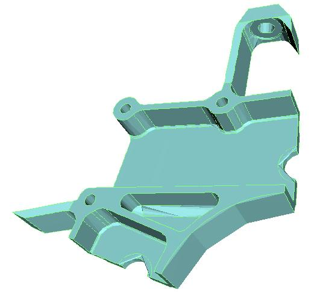
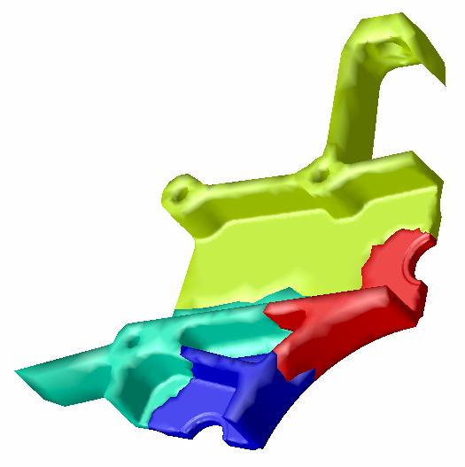
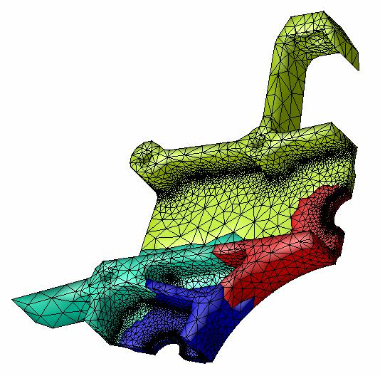

Terascale Computing
The ability to compute on a terascale with trillions of operations per second and exploiting memory capacities of trillions of bytes has been demonstrated on selected problems. However this achievement has required the use of experimental hardware and software systems, great expertise and much labor. The associated challenges have restricted terascale computing to a small fraction of its potential impact on the scientific enterprise. A primary ITAPS goal therefore is to address grid related challenges in petascale computing and provide a coherent, usable, scalable and efficient set of tools enabling terascale computing for mainstream scientific applications.
Hierarchical Design
Comprehensive hierarchical design of both data structures and algorithms is the essential challenge in achieving efficient use of computing resources at the terascale. Interoperability alone is not sufficient as tools with this property may nevertheless have computational complexities and memory footprints that render them useless at the terascale. A single failure in this regard anywhere in the tool chain will incapacitate the over-all system. Hence the hierarchical design concepts introduced in the interoperable meshing section must be applied throughout the entire software system in use. This has been recognized by the scientific simulation community, and the best-in-class tools in most of the relevant sub-disciplines rely on hierarchical design. Examples include CAD systems that organize data in different layers of resolution, adaptivity in meshing, multi-level graph partitioning schemes for static problem partitioning, multigrid solvers and visualization systems that nimbly present data at many levels of resolution. It is our belief, however, that although these tools are nearly optimized for their particular application, their union is not optimized for the over-all problem of terascale simulation. Our intention is to actively consider various design trade-offs across the whole system. We will not try to design better solver or visualization routines. Rather we will consider what hierarchical information known or easily generated within our scope of geometry and meshing technology can be exploited by downstream tools. For example, information about the geometric domain model and its decomposition may be useful in computing optimal decompositions shown in Figure 1. Similarly, hierarchical information generated previously in the process may be preserved and potentially exploited in preconditioning of iterative solvers.
Load Balancing
A critical step in parallel computation is the assignment of application data to processors. The ideal distribution assigns data so that per-processor workloads are the same over all processors (eliminating idle time) and inter-processor communication is minimized. For both structured and unstructured grids this distribution is often done through a serial pre-processing step, using a static partitioning tool such as Chaco or METIS.
For adaptive terascale computing, serial static partitioning is insufficient. Dynamic partitioning techniques must be employed from the start of the simulation process. The specific dynamic load balancing algorithms used are often different for structured vs. unstructured grids. Often graph based algorithms are used for unstructured grids while either graph based or geometric methods may be appropriate for structured grids. Our proposal includes parallel mesh generation steps, constructing the discrete contributions to the global system, performing global iterations, and adapting the discretization. The procedures performing these operations are responsible for the construction and dynamic control of the parallel decomposition and its interactions with solution processes. Although this decomposition may be independent of the other three levels, information on how operations and communications are performed within and between those levels is central to the control of the dynamic load balancing procedures.
For the proposed work, we will use Zoltan to redistribute data after parallel meshing and adaptive mesh refinement. The Zoltan Dynamic Load-Balancing Library was developed to provide parallel, dynamic repartitioning to such applications. Zoltan's design is data-structure neutral, so that it can be used in many different applications without imposing restrictions on the data structures those applications use or requiring application developers to understand Zoltan's data structures. This makes it easy to support control with respect to the entities at the various levels in the hierarchic domain decomposition and also easy to integrate with target applications. Moreover, Zoltan includes a suite of algorithms, allowing developers to experiment easily with different algorithms to see which is best for their applications. Zoltan currently includes geometric algorithms (Recursive Coordinate Bisection, Recursive Inertial Bisection), tree-based algorithms (Octree Partitioning/SFC, Refinement Tree Partitioning), and graph-based algorithms (through interfaces to the popular ParMETIS and Jostle packages). We will provide interfaces from the ITAPS software to Zoltan so that applications using the ITAPS software can use Zoltan seamlessly. We will add support to Zoltan for hierarchical machine models of heterogeneous parallel computers. These models will account for various processor speeds, memory capacities, cache structures, and network speeds and topologies. This capability will be incorporated using RPM [TerBea00, FlaTer00] as a prototype for unstructured grids and PADRE as a prototype for structured overlapping grids. We will also add to Zoltan the specific load balancing methods MLB developed for parallel adaptive overlapping structured grids in Overture. Our collective research will provide crucial support for adaptive methods on advanced architectures employing both distributed memory (using MPI) and shared memory (using threads). This will facilitate investigation of optimal partitioning strategies for linear and eigen solvers and preconditioners of interest in the application domains of interest. An aspect of parallel computing important to the effectiveness of dynamic load balancing methods are the languages and mechanisms for supporting inter-processor communications. As part of our efforts in this area we plan to examine the modifications needed for our methods to take advantage of advances in this area.
The RPI Partition Model
An intermediary model located between the geometric model and the mesh has been developed for FMDB to simplify parallel operations. This model is called a partition model and is independent of the Zoltan mesh partitioning algorithm used. The partition objects are the mesh entities that are not part of the boundary of any other mesh entities. After the partition objects have been load balanced the partition model is constructed. The partition model represents the mesh partitioning in a topology form which is used to support mesh-level inter-partition communications. The mesh entities are classified on partion model entities which are classified on model entities. An operator is provided which returns a set of processors which a given mesh entity or partition model entity resides on (many mesh and partition model entities will reside on more than one processor but each mesh and partition model entity is uniquely assigned to one processor).
| Geometric Model | Partition Model | Partitioned Mesh |
|---|---|---|
|  |  |  |
Generic data communicators are used to share information associated with mesh entities between remote copies of the same mesh entity. The generic data communicators use mesh-level and entity-level containers for storage and mesh-level and entity-level iterators for access. Mesh and data migration after load balancing is done automatically using the generic data communicators in FMDB. The amount of data communicated during migration of the mesh entities can be minimized using the generated partition model for the new mesh partitioning. The partition model also aids in determining which processors a mesh entity needs to be migrated to. The migrated data must be collected together though in the proper form which may require restoring necessary downward adjacency due to the end-user's desired mesh representation format. More information on the partition model is available in E. Seol's dissertation.